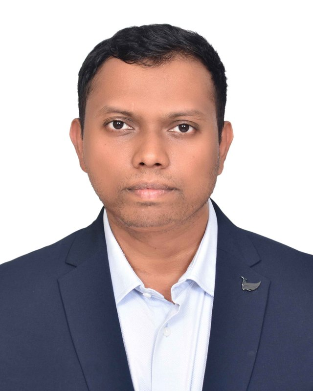

Hydrogen and battery-gas sensors
Room-temperature sensor arrays for hydrogen leaks and battery vent gases, with selectivity designed in through composite chemistry and interface engineering.
Materials scientist · Functional oxides · Sensors
PhD, IIT Madras (Prime Minister's Research Fellow) · Senior Manager, Strategic Planning, CUMI, Murugappa Group
I make functional oxide ceramics at low temperature and build them into devices that sense gases, light and heat. My work connects precursor chemistry and percolating metal–oxide networks to room-temperature sensors, flexible optoelectronics, EMI shielding and early warning of battery thermal runaway.

My work runs from precursor chemistry to working devices: room-temperature gas and light sensors, EMI shields and early warning of battery thermal runaway.
Gas sensors, light detection and harvesting, multiferroic nanocomposites, battery safety and printable ceramics, with schematics and interactive models from my papers.
9 journal · 3 IEEE · 3 patentsJournal articles with Scimago quartiles and DOI links, conference papers, patents, talks and posters.
Industry · research · teachingAppointments, education, teaching and mentoring, and fellowships and awards.
I plan to build a laboratory for integrated sensing materials: functional oxides and metal–ceramic nanocomposites, processed at low temperature, that detect hazards early and can power themselves.
Room-temperature sensor arrays for hydrogen leaks and battery vent gases, with selectivity designed in through composite chemistry and interface engineering.
Lead-free piezoelectric and multiferroic oxides that harvest mechanical and light energy, coupled to low-power sensors on a single flexible substrate.
Printed electronic skins and sensor networks whose placement and readout are guided by physics-based models, extending my work on battery packs.
This programme fits national priorities in electric mobility, green hydrogen and semiconductors, and builds on my experience managing a ₹6 crore ANRF programme, procuring about ₹3 crore of research equipment and working with industry partners.
I welcome conversations about faculty openings, research collaboration and invited talks.